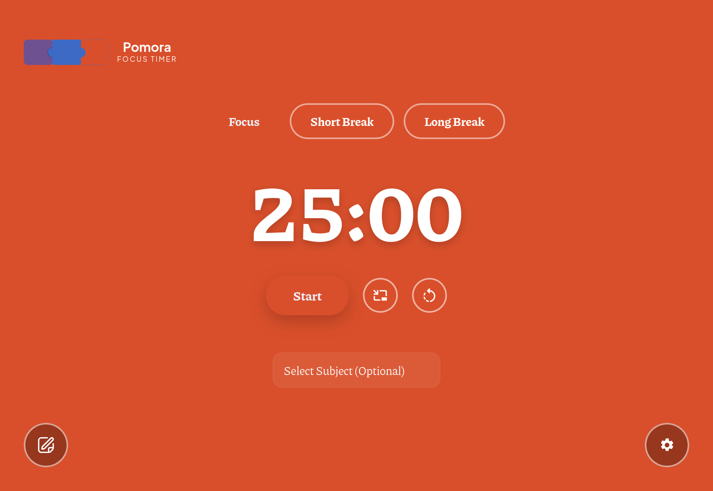
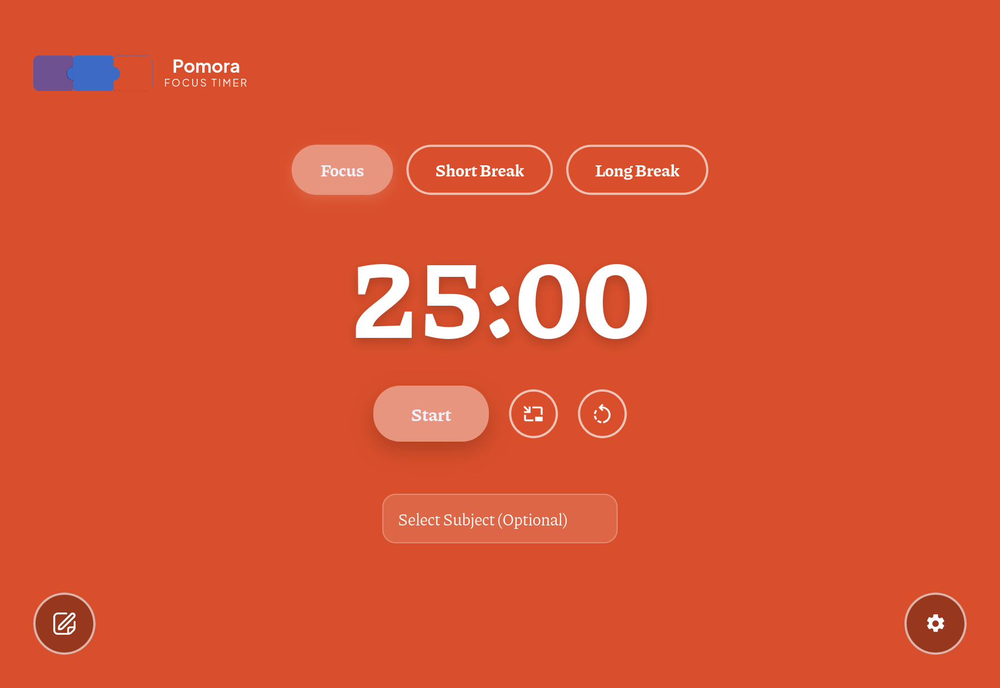
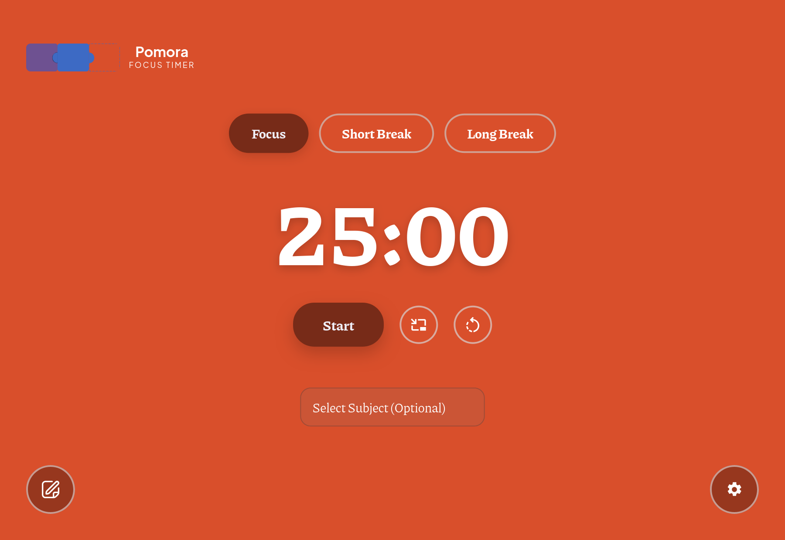

The theme background is #d94f2b. A solid theme's accent is its own background colour,
so a literal match paints Start and the active mode pill in the same colour as the page.
Each column below is the real app (header, mode pills, Start, subject dropdown, FABs).
Accent = the background colour exactly. Buttons nearly vanish; only the drop shadow hints at the shape.

Same hue, a shade lighter. Buttons pop — but the white label on the button drops to about 2.3:1 contrast.

Same hue, a shade deeper. Reads as a real button, and the white label keeps ≥4.5:1 contrast. This is what is in the working tree now.
